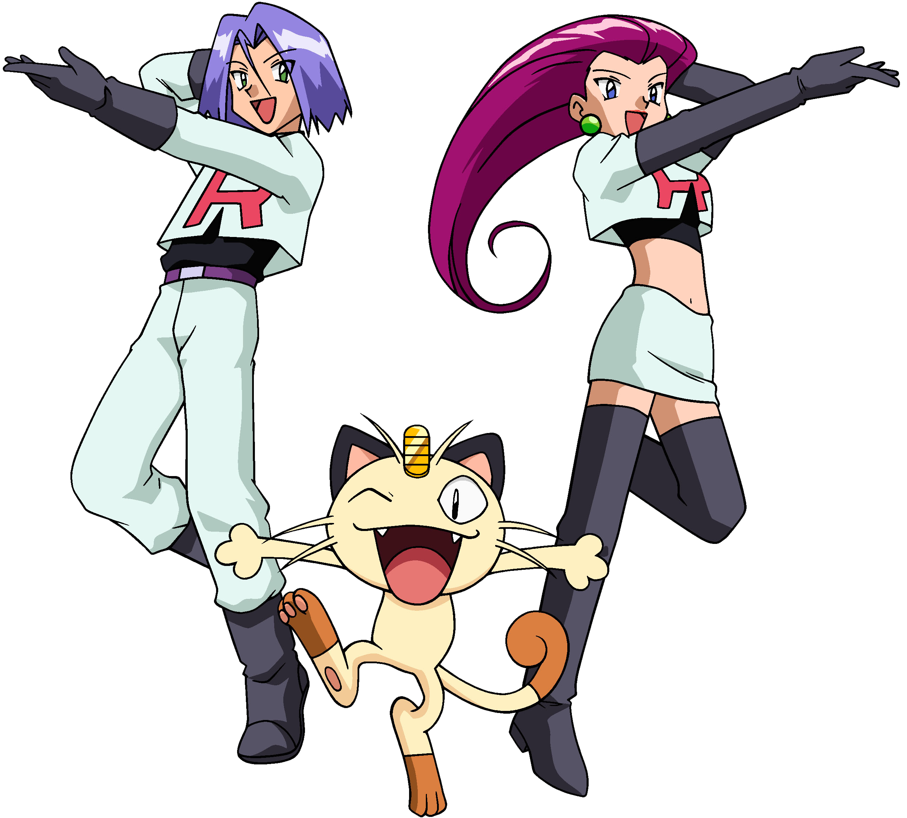
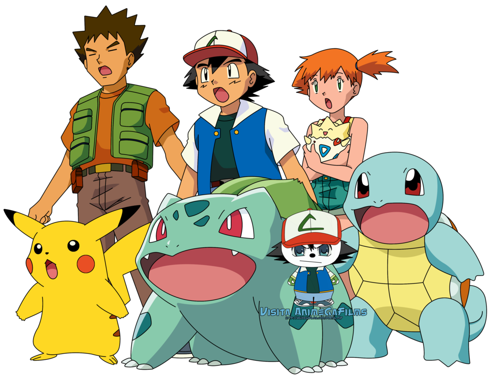

ПОКЕМОН(Яп. - покэтто монсута; англ. Pokemon, от англ. Pocket Monster карманный монстр). само слово ПОКЕМОН обозначает существо, обладающее сверхъестественными способностями. На данный момент существует 721 разновидность покемонов. Тренера обучают покемонов для сражений с покемонами других тренеров. Бои проходят до момента, пока один из покемонов не падает без сознания или его тренер не сдаются, до смерти схватки не происходят никогда. Как правило, сильные и опытные тренеры покемонов пользуются уважением.
Главный герой - Эш, мальчик из города Албастия, который мечтает стать мастером покемонов и лучшим из тренеров. Eго первым покемоном стал Пикачу.К Эшу присоединяются Мисти — лидер водного стадиона города Церулина, желающая заставить Эша заплатить за сломанный им её велосипед, а также Брок, лидер каменного стадиона города Пьютера, мечтающий стать покемоноводом, законченный донжуан. За героями по пятам следуют члены Команды R — Джесси, Джеймс и Мяут, которые намереваются похитить Пикачу у Эша, но раз за разом терпят неудачи...